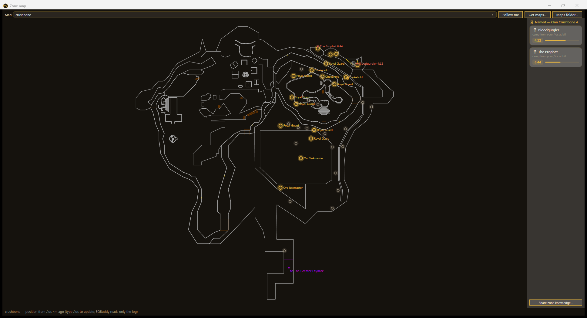

Gear
What you own and what is worth chasing — your bags, your wishlist, and what dropped for you, read from the files the game itself writes.
“Given who I am and what I want to accomplish, what should I do next?”
EQBuddy Evolved is a companion for EverQuest Legends that answers that question from your own play — it reads your log file, and nothing else.
Not a generic best-in-slot list. The useful answer is the upgrade you can actually get, from content that is realistic given your history, reached with travel you already unlocked.
What you own and what is worth chasing — your bags, your wishlist, and what dropped for you, read from the files the game itself writes.
The quest that carries the upgrade — your tracker, Epic 1.0 and Plane of Sky checklists, with turn-ins that tick themselves when the loot lands.
Who actually drops it — observed personal drop rates from your own kills, with what eqlwiki doesn’t know yet flagged for sharing back.
Where it spawns and when it’s due — camps you’ve marked and spawn timers from your kills, drawn on the zone map.
How to get there — with travel you already unlocked, not a teleport you don’t have.
“I log into my character. EQBuddy recognizes the classes I am playing and remembers what I unlocked before. … It can tell me which attainable upgrades are meaningful, which mob or quest provides it, whether that content is realistic from my own history, and how to get there with travel I already unlocked.”
The HUD earns space only for information that may change the next action within seconds or minutes. Research, comparison, planning, and review belong in the full app. The phone is a second screen you look away to.


Glance first→expand for live detail→full application for analysis
Epic and Plane of Sky checklists with a guided next step — who, where, and what, each step cited to eqlwiki. Loot the piece and the box ticks itself.

What you’re carrying, what you looted, what you still want — the wishlist ticks itself and quests know what you can turn in.

Every stored sitting: experience pace, wealth, faction, level-ups — your history, kept on your machine.

The zone map with your camps and spawn timers from your own kills — position from /loc, because EQBuddy reads only the log.

Damage, healing, pet, and the fight timeline — your numbers, nobody else’s.

Observed personal drop rates per creature — and paste-ready wiki edits for the drops eqlwiki doesn’t know yet.

Every image on this page is a real capture of the app, staged by the repository’s screenshot scripts. Shots span EQBuddy’s built-in themes.
EQBuddy measures and guides the player using it. It is not a party or raid ranking tool, a leaderboard, or a way to judge other people.
No game-memory reads, no packet inspection, no gameplay automation, no hidden-information extraction. If it isn’t in your log, EQBuddy doesn’t know it.
No required account, no required cloud service, no telemetry by default. Your history stays on your machine unless you explicitly export or contribute it.
A precise-looking wrong number is worse than a clearly identified estimate. Where a decision depends on it, EQBuddy says which kind of number you are looking at:
Current public downloads are the 1.x line. Evolved is in active development and proprietary; the screenshots above are the real app as it takes shape.
Every published 1.x release is free under the MIT license, with signed installers. The final Linux and macOS 1.x builds stay downloadable and usable — they are not being taken down.
Evolved (v2) is proprietary — All Rights Reserved — and is not published yet. There is nothing to sign up for and nothing to buy; follow the repository to see it land.
Licensing, precisely: already-published 1.x stays MIT (LICENSE) — those grants are not revoked. Evolved is proprietary (LICENSE-EVOLVED.md).
A finished Evolved release should make this feel ordinary: EQBuddy knows the character you are playing, and when you want more than a glance, you get a useful next step — without having to understand its internal windows, cards, menus, files, or data pipelines.